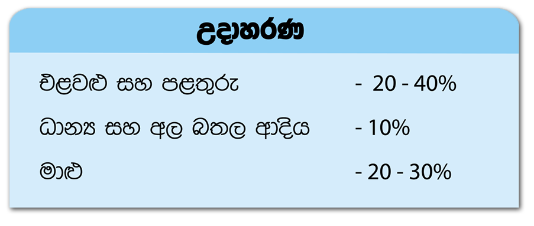
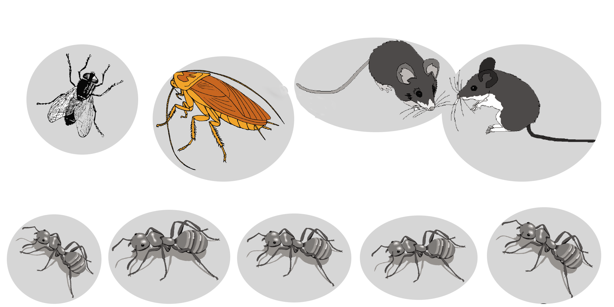

ආහාර අපතේ යෑම හා විනාශ විම සිදුවිමේ ක්රම
ආහාර අපතේ යාම සිදුවන විවිධ ක්රම
- නෙසැලකිලිමත්කම /නාස්තිය නිසා සිදුවන අපතේ යෑම ( උදා:- පිඟානේ කෑම ඉතිරි කිරිම, නොපිසු ආහාර ඉවතලෑම සහ
පිසු ආහාර අතිරික්තය නිසා හෝ නිසියාකාරව නොතිබිම නිසා ඉවතලැම) තවද විශාල පිරිසක් නේවාසිකව සිටින ස්ථාන
(උදා:- ආරෝග්යශාලා, නේවාසිකගාර හෝහමා පරිමාන ආහාර සම්පාදන ආයතන උදා :- තරු හෝටල්වල සිදුවන
ආහාර නාස්තිය ඉහළ මට්ටමක පවති.
- පසු අස්වනු හානි තවත් ආකාරයකට ආහාර අපතේ යාමට හේතු වේ. මෙහිද කෘමින් මීයන් වැනි සතුන්ගෙන් වන හානි මෙන්ම
ක්ෂුද්ර ජීවින්ගෙන් වන හානි ද සැලකිල්ලට ගත යුතුය. එමෙන්ම අවිධිමත් ලෙස අසුර ප්රවාහනය කිරිමද ආහාර අපතේ යාමට
මහත් සේ බලපායී. මෙය නිෂ්පාදනයේ සිට ආහාර පරිභෝජනය කිරිම දක්වා පුළුල් පරාසයක විහිදි පවති.පසු අස්වනු සැලකිය
යුතු ආහාර ප්රමාණයන් අපතේ යාමට මුල්වන අතර එමඟින් සිදුවන හානිය ආහාර ද්රව්ය වල ස්වරුපය මත වෙනස් වේ.


-
පියවි ඇසට නොදැනි සිදුවන හානි එනම් ආහාර පිසිමේදි හෝ සැකසිමේදි වන හානි පිළිබඳවද දැණුවත් විය යුතුය.
(උදා:- ප්රෝටීන්, මේද, කාබෝහයිඩ්රේට, විටමින් හා ඛනිජ ලවණ තාපය හමුවේ සිදුවන පරිවර්තන) ඇතැම් අවස්ථා
වලදී උෂ්ණත්වය සහ ආලෝකය ආහාරයක පෝෂණ ගුණය හීන කරනවා පමණක් නොව විෂ ද්රව්යන් උත්පාදනයටද හේතු වේ.